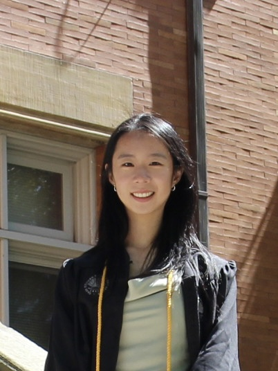
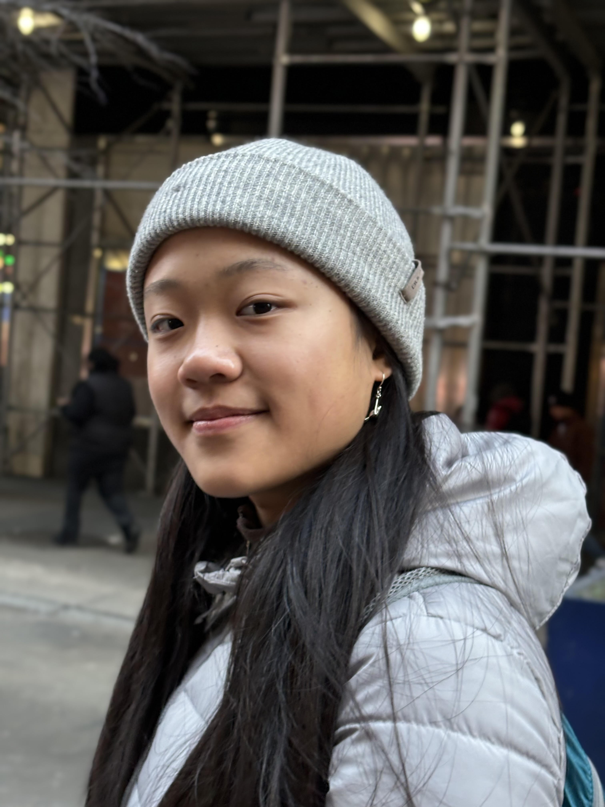
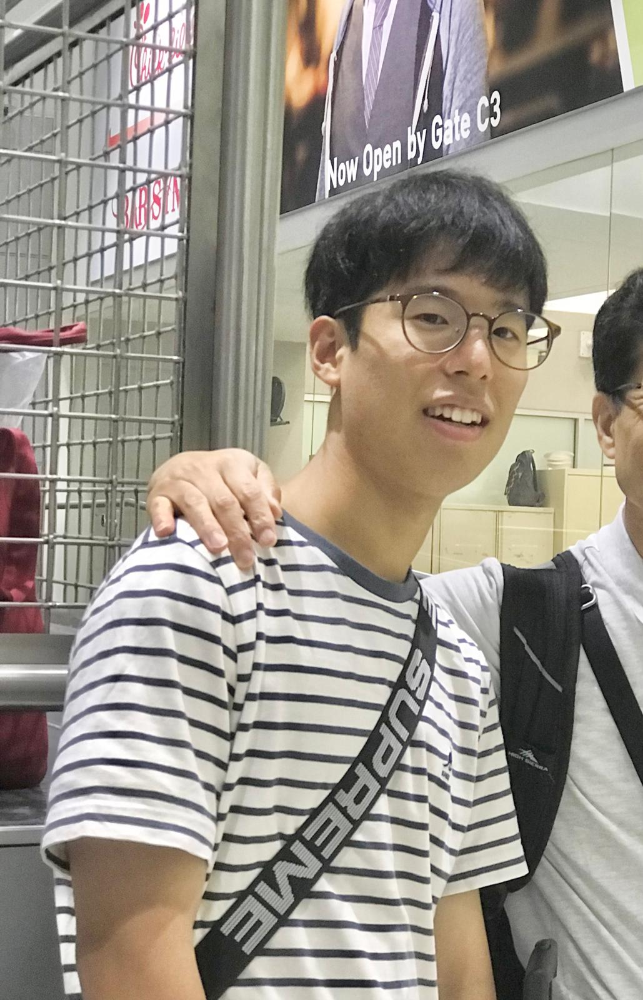
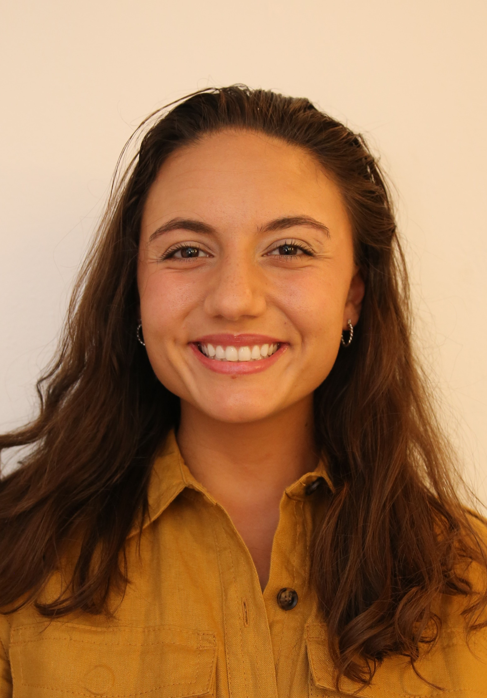
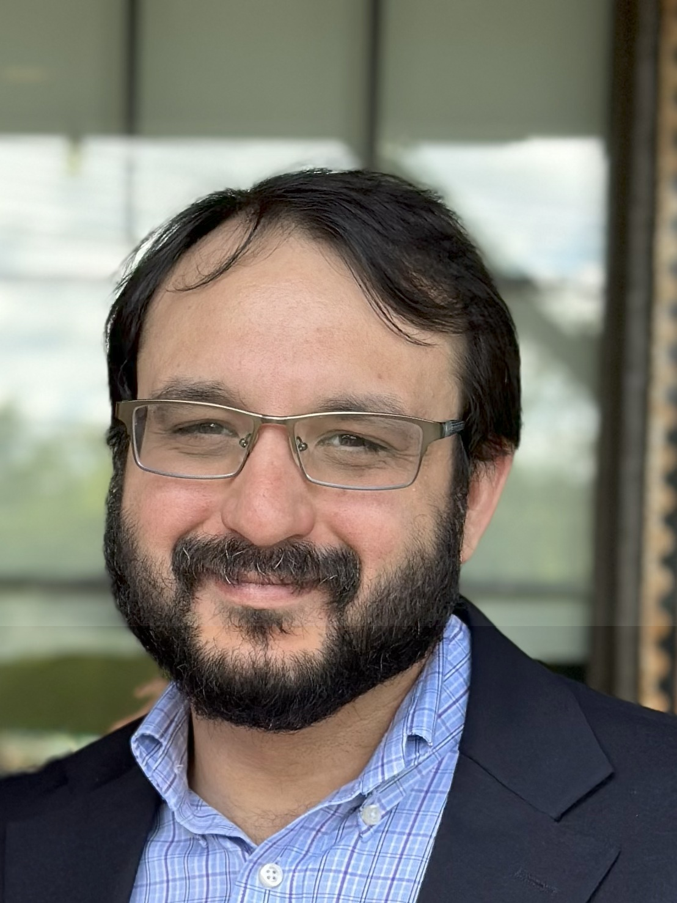
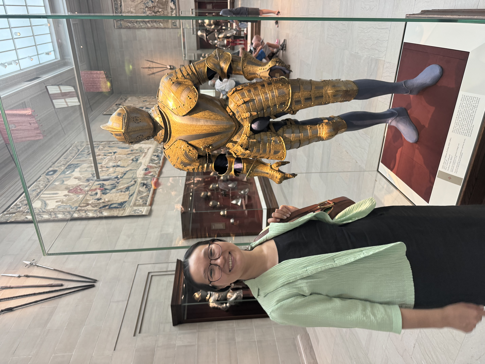
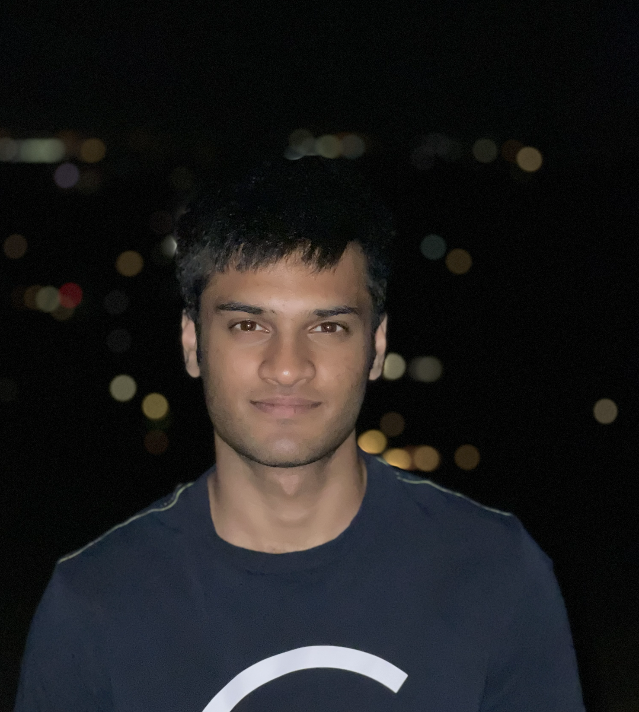

Lab Members

Tian Liu. PhD
Assistant Professor, Department of Pathology
📧 txl757@case.edu
Tian became a faculty member at CWRU in 2021. He has a long-standing interest in the development of mitochondria-based therapeutic approaches to treat AD and ADRD, as well as the investigation of the role of mitochondria in the progression of neurodegenerative diseases. The modest family that Tian establishes in the small city of Solon, Ohio, consists of his wife, son, and daughter. As a college student, Tian has been a fan of Warcraft 3: The Frozen Throne. Despite the game’s decline in popularity, he still plays it on occasion, typically twice a month. Additionally, Tian derives pleasure from spending time with his family with the intention to maintain a cohesive work-life balance.
Liam Wetzel, MS
PhD Student, Department of Pathology
📧 lsw59@case.edu
Liam earned a double major in Biology and Psychology, as well as concentrations in chemistry and neuroscience, from the University of Nevada, Las Vegas in 2019. He has been in the position of research assistant in the laboratory at CWRU in 2022 as part of his master’s degree in pathology and joined the CWRU BSTP PhD program in 2025 July.

Ching-Yao Yang, MS
Research Assistant 2, Department of Pathology
Ching-Yao Yang is a Research Assistant in the Department of Pathology at Case Western Reserve University. He earned a Master’s degree in Bioinformatics from the Morsani College of Medicine at the University of South Florida and has experience in both wet lab and computational biology. Outside of work, he enjoys exploring new places with his family.

Kexin Zhang, MS
Research Assistant 1, Department of Pathology
Kexin earned a master’s degree in Biology and a bachelor’s degree with double majors in Biomedical Engineering and Psychology. She is interested in neuroscience, particularly how disease states affect cognitive, behavioral, and motor functions. As a research assistant in the Liu lab, she is eager to investigate the mechanisms and potential treatments of neurodegenerative diseases using both in vitro and in vivo models.

Anlin Wei
Undergraduate Research Assistant, Neuroscience
Anlin is currently a first year undergraduate at CWRU pursuing a Neuroscience degree with plans to attend medical school. Outside of the lab, she also rows crew and is a member of Partners in Health Engage.

Luke Mosca
Undergraduate Research Assistant, Classics and Biology
Luke is a second-year student at CWRU double majoring in Biology and Classics. He joined the lab as a research assistant in the spring of 2025. He enjoys playing sports, being in nature, and spending time with friends and family.
GuanYu Lin, PhD
Research Associate, Department of Pathology
Guanyu began his scientific career in DNA crystallography at New York University before pursuing doctoral training at Worcester Polytechnic Institute, where he earned his PhD in Biochemistry. His doctoral research focused on the non-canonical roles of PLCβ1 in RNA interference and neuronal differentiation. He subsequently completed a postdoctoral fellowship at the University of Michigan Medical School, investigating circadian rhythm mechanisms in Drosophila clock neurons. Guanyu joined the Liu Lab as a Research Associate in 2026, where he applies his structural and cell biology expertise to the study of mitochondrial dysfunction in Alzheimer’s disease. Outside of the lab, he enjoys road trips to explore new places and spending time with his parrot.
Tricia Gilliland, MS
PhD student, Department of Pathology
To be updated…
Former Lab Members

Paul Lee
📧 pyl9@case.edu
In 2023, Paul enrolled as an undergraduate student in the Neuroscience department at CWRU. He is currently serving in the military in South Korea. Good Luck, Paul!
Zexi Zhu. BA
In 2020, Zexi enrolled as an undergraduate student in the Biochemistry department at CWRU. She began to work in Tian’s laboratory in 2021 and is currently pursuing a Master’s degree in the Public Health Program in Chronic Disease Epidemiology at Yale University.
David Roy, BS
David has been employed in the laboratory since 2022. He is presently in the process of preparing for his application to medical school.
Viraj Gorthi. MS
Starting in 2021, Viraj has been working as an undergraduate research assistant in the laboratory. At present, he is studying in the first year of medical school at CWRU.
Pavan Kumaraguru. BA
Since 2021, Pavan has been working as an undergraduate research assistant in the laboratory. He is now a student in the second year of medical school.

Teresa Thomas. MS
Since 2024, Teresa has been working as a research assistant in the laboratory. She is now a student in the medical school in the University of Vermont.

William Samsa, PhD
Will was working at the Liu lab as a Research Associate between 2025-2026. He is currently working at Cleveland Clinic.

Dina Bugybayeva, MSc
Dina has been working at the Liu lab between 2024-2026. She moved to North Carolina in July 2026.

Anshul Dash
Anshul has been working at the Liu lab between 2024-2026 as an undergraduate Research Assistant.